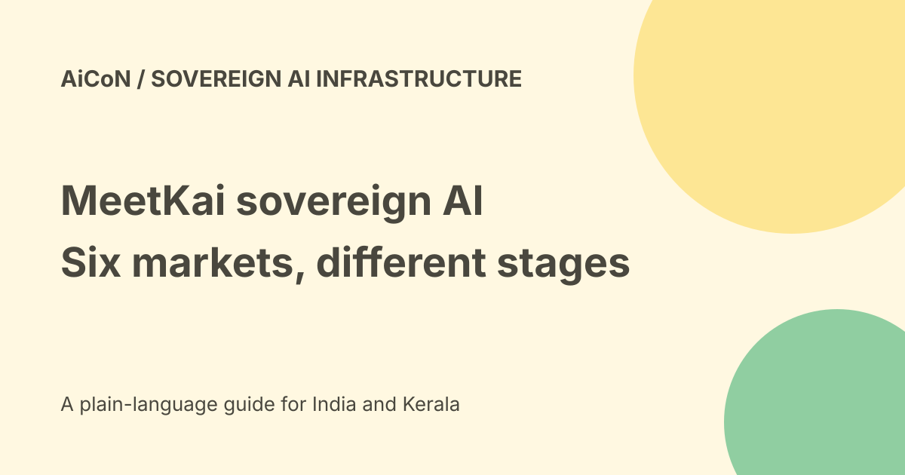

MeetKai sovereign AI: six-country plans and rollout stages
MeetKai announced a six-country sovereign-AI rollout on 25 September 2026: Brazil, Ukraine, Pakistan, Kazakhstan, Uzbekistan and Bangladesh. The release describes different stages, including a Brazil tender win and first Ukrainian capacity planned for 2027. It does not prove all six national systems are already running.

What sovereign AI means here
The company describes national-language models and infrastructure trained, fine-tuned and served inside the relevant country, using NVIDIA computing, networking and software.
Sovereignty can concern location, control, operations and legal rules. The label alone does not establish all of those for a finished deployment. Check actual contracts and architecture.
The six named markets
The announcement names Brazil and five VEON markets: Ukraine, Pakistan, Kazakhstan, Uzbekistan and Bangladesh. MeetKai describes operating with local partners and training local engineers.
India is not in that six-country list. The announcement does not establish an Indian public service, local API entitlement or national-model access for a Kerala reader.
Brazil's stage
MeetKai says its Brazilian organisation won SERPRO's public tender with the highest overall score. It says the platform and locally trained models will be deployed in-country, including a sovereign coding agent now launching with SERPRO.
Those are company-reported procurement and launch statements. A tender win or launch description is not proof that every workload is deployed, fully accepted or independently audited.
Ukraine's stage
The release says MeetKai and Kyivstar will build an AI data centre, with first capacity planned for 2027. The design is expected to expand from fifteen to one hundred MW as demand grows.
That is a planned timeline and design scale, not current delivered capacity. Power, equipment, financing, approvals and security conditions can affect delivery.
Air-gapped operation is an option, not magic
The announcement describes isolated deployments for ministries, infrastructure operators and other institutions. Air-gapped generally means separated from ordinary external network access.
A claim about this deployment option does not prove every site is disconnected or every process is secure. Updates, imports, support access and data exports still need controls.
Other countries and repeatable design
MeetKai describes acting as an AI lab service for VEON, beginning in Ukraine and then the other named markets. It presents a shared platform as a repeatable design.
A repeated architecture can still require country-specific language work, regulatory review, data preparation and operational training. A population figure is not a count of active users.
Questions for an institution evaluating it
- Identify the exact country, partner and project stage.
- Ask what capacity and services are actually available now.
- Inspect data-location and operational-control commitments.
- Review model and software licence terms.
- Test the national language on representative tasks.
- Check update, monitoring and incident procedures.
- Verify isolation and authorised import or export routes.
- Measure quality, latency and recovery requirements.
- Get a complete contract and cost model.
No institution was contacted, account opened or model deployed for this guide.
Cost and access
The release does not establish a consumer free plan, a public final tariff or an INR quote. National infrastructure and enterprise services are different from a free chat website.
Compute, power, operations, models, support and expansion can be separate costs. No actual budget or service-level agreement was verified here.
Local hosting does not settle every privacy question
Data can remain in-country while still being accessed by an unauthorised person or retained longer than necessary. Review identity, roles, logs, retention, subprocessors and contractual responsibilities.
Do not describe a national model as automatically lawful for every data source or suitable for every public decision.
Forward-looking limits
The release explicitly says its planned projects and benefits are subject to risks and uncertainties. It lists agreements, construction, hardware, power, financing, approvals, export controls and political or security conditions.
Those caveats apply to the promised rollout. No future result is guaranteed by the announcement.
What changed since the original post?
We separate the six-country announcement from delivered systems, preserve Ukraine's2027 plan and treat Brazil's launch and tender claims with their actual scope. In-country goals are not presented as an independent audit.
Frequently asked questions
Are all six systems confirmed live?
No. The release describes several planned stages.
Is India included?
Not in the named six-country rollout.
Was a site inspected?
No.
Sources: MeetKai-issued sovereign-AI announcement. Checked 7 October 2026.